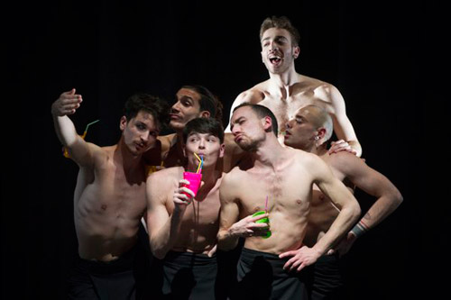

|
The 2016 Fresh Fruit Festival
July 11-24

MUSICAL
Chance – A New Musical Play about Love, Risk, & Getting it Right
By Richard Isen -Inspired by Quotations from the Writings of Oscar Wilde
Wednesday, July 20, 6:00 pm; Thursday, July 21, 9:00 pm; and Saturday, July 23rd, 3:30 pm.
A gay psychologist and a handsome young rent boy stumble down a unique path to healing when guided by a mysterious Hollywood glamour queen (as played by a gender illusionist). 55 year old Gregory has spent his adult life denying the loss he experienced as a young man during the AIDS crisis. After a near-death experience, The Lady appears. Is she an inner guide from the Jungian collective unconscious? Or a musical hallucination resulting from a small stroke? Gregory is pushed out of his solitary reality by his unlikely muse, and down the rabbit hole of mid-life crisis where he enters into a turbulent, dangerous relationship with a young male escort named "Chance."
Produced by Anne Nygren Doherty and the New Musical Theatre of San Francisco
With book, music and lyrics by Richard Isen, direction by Jonathan Cerullo, and musical direction by Denise Puricelli, This unique theatrical cocktail is one part fun, one part heart, and one part magic.
SHORT PLAYS
CHILD’S PLAY: An Evening of Short Plays
Planchette by Carolyn Gage New York Premiere
Part of CHILD’S PLAY: An Evening of Short Plays
Thursday July 14th, 7pm; Saturday July 16th, 7pm
During a nor’easter on the New Hampshire coast in 1879, two fourteen-year-old schoolgirls share their secrets about trauma they have survived and the deeper secrets about their sexual orientations and gender identities. It’s a dark and stormy night on the New England coast, with two teens sharing their scariest secrets… secrets that include an ax murder and arson! Directed by Nicole Kontolefa.
The “People’s Choice” award winner at the Maine Playwrights Festival this spring.
AFLIC by Rachel Atkinson, Liz Bynum and Sean Pollock
Directed by Drew Weinstein
Part of CHILD’S PLAY: An Evening of Short Plays
Thursday July 14th, 7pm; Saturday July 16th, 7pm
In this absurdist comedy a pair of legs tells how some slow dancing may have become an Awkward Fornication Leading To Immaculate Conception. A hilarious absurdist romp about maturity, sexuality and identity that is perfect for young audiences.
Bernie is your typical teenage girl. Except for the fact that wears a swim cap at all times, has an imaginary friend, and a mother with a delusion that she is mother goose. Bernie struggles with her love for her classmate Chip by insisting she becomes pregnant after they slow dance together. After Bernie comes to the realization that her pregnancy isn’t legitimate, she begins to unravel – while Chip begins to come into his own and realizes who he really is.
FULL LENGTH PLAYS
12th NIGHTed
by Patrick McCarthy
Monday 11th, 8 pm; Wednesday 13th, 9 pm; Sunday 17th, 2 pm
On the 12th night of Christmas your true love brings to me, many kinds of pasta, a butler braying, and one golden ring. Updated to gay, swinging, 1960’s Little Italy, NYC, this 12th NIGHTed by ptmc, FFF Outstanding Playwright in 2012 & 2013, is shot out of a confetti cannon of sexual confusion, with double sets of twins & families trying to stick or get back together. A farce of epic proportions mirroring the Bard’s TWELFTH NIGHT.
All the Usual Ways to Bruise an All too Fragile Ego
by Mila Golubov, Directed by Tim Errickson
Monday 18th, 9pm; Tuesday 19th, 8:30pm; Sunday 24th, 5:30pm
Sally was once with Cindy who was once with Maria who may seduce Mark after Sally’s had her way with him in exchange for cold hard cash. A beautifully imagined, twisted tale of manipulation, ALL THE USUAL WAYS TO BRUISE AN ALL TOO FRAGILE EGO weaves flesh, promises, and personal weakness into the cruelest form of revenge. Featuring Chrissy Brinkman, Laura Kamin, Sammi Katz, & Spencer Scott
Always Plenty of Light at the Starlight All Night Diner
by Darcy Parker Bruce, Directed by J. Mehr Kaur
Monday 18th, 7pm; Wednesday 20th, 9pm; Friday 22nd, 9pm
Tired of that same old space-time continuum? Longing for a Lesbian love story with a bunch of freakin’ dinosaurs? Come join us for a SUPER queer, time travel adventure! ALWAYS PLENTY OF LIGHT AT THE STARLIGHT ALL NIGHT DINER bends genres – and realities – for a sweet-hearted screw-ball Cretaceous romp.
Boys of a Certain Age
by Dan Fingerman
Saturday 16th, 2 pm; Sunday 17th, 7 pm; Tuesday 19th, 6:30 pm
Ira and Larry have known – and known – each other since Hebrew school. Years later they reunite for dinner with one’s son and the other’s nephew; four gay Jewish men bonding and sparring and grappling with their pasts. A heartfelt play about family, identity, and history, BOYS OF A CERTAIN AGE shows us how differently people can see the world, even when the world sees them as very similar.
Confessions of a Homo Thug Porn Star: The Tiger Tyson Story
by James Earl Hardy
Saturday 16th, 9 pm (guest talkback after); Sunday 17th, 9 pm
“Man, son, father, husband, businessman… Porn stars are people, too.” From rags to prison to success- in the adult film industry. James Hardy’s fast-clipped biography of the Brooklyn-born Blatino porn star tells it like it is. Raw. Partial Nudity; Strong Language
Saturday night’s performance will feature an audience Q&A, with special guest Tiger Tyson himself!
The Fierce Urgency of Now
by Doug DeVita
Friday 22nd, 7 pm; Saturday 23rd, 6:30 pm; Sunday 24th, 3:30 pm
A fast-moving caustic comedy, Kyle, an art director in high-powered New York ad agency, tries to discover his real self amid power struggles and stereotypes. He finds an ally in Dodo, who understands his plight – being that she became a lady-living-legend in an era of "Mad Men."
Fire On Babylon
by Michael Raver
Tuesday 12th, 9 pm; Friday 15th, 6 pm; Sunday 17th, 5 pm
Two New Yorkers are locked in personal crisis, while the city is having one of its own: the 2003 blackout. Reclusive novelist Hugo Thomas has invited a beguiling young publishing intern to his downtown apartment. Within moments of their meeting it becomes clear to each that the other offers much more than meets the eye. When Hugo’s apartment is plunged into darkness, they connect in ways neither had imagined. Directed by Paul Mason Barnes
Watch Me Burn
by Rae Binstock
Tuesday 12th, 7 pm; Wednesday 13th, 7 pm; Thursday 14th, 9 pm
Prometheus “Methe” Graham, a young black New York City firefighter, is determined to rely on herself and no one else. But the heat is rising: the stresses of her mother’s recent death, her teenage sister’s rebellion, her captain’s doubts, and the disapproval of her Harlem neighbors create an ongoing psychic holocaust that threatens to consume her from within. There are those, like Methe’s unexpected lover Sophia or her firehouse buddy Andre, who try but cannot penetrate her self-selected isolation; nor, when the times comes, can they spare her the revenge taken by the flames she has fought so hard to conquer.
Where’s Hope? Where’s Hope? Oh, God, Where’s Hope?
By Frederick Kirwin. Directed by Paul Navarra.
Thursday 21st, 7 pm; Saturday 23rd, 8:30 pm; Sunday 24th, 1:30 pm
Over the course of thirty years our perceptions of the past change. A love triangle, a midnight storytelling, a drowning, and a murder/suicide may not be what they seem. Set in Florida of the 1960s, Frederik Kirwin’s poetic play is a sometimes comic discourse on revenge, pride, ambition, jealousy, wanderlust, sibling rivalry, sexual innocence, reversal of fortunes, and a baseball game.
DANCE
All Out Dance 2016
From Italy, the Compagnia KÖRPER perform their signature full length work “Aesthetica-esercizio n°1”
Friday 15th, 8 pm; Saturday 16th, 5 pm
|